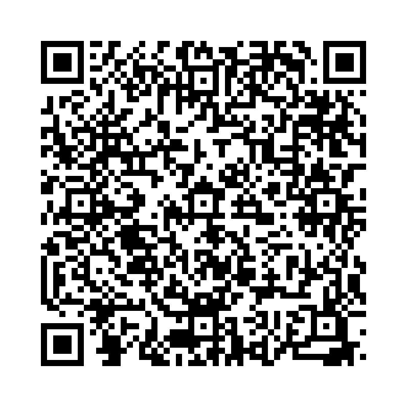

「come」は「来る」という意味の動詞で、話し手の方へ近づくイメージです。
以下の単語を正しい語順に並べ替えて、正しい英文を作りましょう。

問題 1: (here / please / come) - こちらに来てください。
解答: Come here, please.
解説: 「Come here, please.」は「こちらに来てください。」という意味です。
問題 2: (come / I / to / bus / school / by) - 私はバスで学校に来ます。
解答: I come to school by bus.
解説: 「I come to school by bus.」は「私はバスで学校に来ます。」という意味です。
問題 3: (you / to / come / my / house / can / ?) - 私の家に来てくれますか？
解答: Can you come to my house?
解説: 「Can you come to my house?」は「私の家に来てくれますか？」という意味です。
問題 4: (comes / he / home / 6 / at / o'clock) - 彼は6時に家に帰ってきます。
解答: He comes home at 6 o’clock.
解説: 「He comes home at 6 o'clock.」は「彼は6時に家に帰ってきます。」という意味です。
問題 5: (comes / cat / door / the / to / the) - その猫はドアのところに来ます。
解答: The cat comes to the door.
解説: 「The cat comes to the door.」は「その猫はドアのところに来ます。」という意味です。
問題 6: (to / comes / she / the / park / sunday / every) - 彼女は毎週日曜日に公園に来ます。
解答: She comes to the park every Sunday.
解説: 「She comes to the park every Sunday.」は「彼女は毎週日曜日に公園に来ます。」という意味です。
問題 7: (play / and / with / us / come) - 来て一緒に遊ぼう！
解答: Come and play with us!
解説: 「Come and play with us!」は「来て一緒に遊ぼう！」という意味です。
問題 8: (come / he / to / does / often / this / shop / ?) - 彼はこのお店によく来ますか？
解答: Does he come to this shop often?
解説: 「Does he come to this shop often?」は「彼はこのお店によく来ますか？」という意味です。
問題 9: (back / come / soon) - すぐに戻ってきてね！
解答: Come back soon!
解説: 「Come back soon!」は「すぐに戻ってきてね！」という意味です。
問題 10: (come / flowers / spring / the / out / in) - 春になると花が咲きます。
解答: The flowers come out in spring.
解説: 「The flowers come out in spring.」は「春になると花が咲きます。」という意味です。